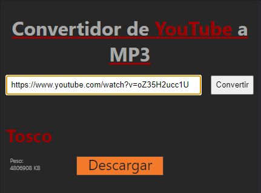

Ejemplo.
¿Quieres convertir un video de YouTube a formato MP3 y descargarlo fácilmente?
!Es muy sencillo! Solo copia la URL del video en el campo de entrada, luego pulsa el botón 'Convertir'. En un abrir y cerrar de ojos, el video se transformará en un archivo de audio MP3 listo para descargar. ¡Disfruta de tus pistas favoritas donde quiera que vayas!
Dar al boton descargar para tener el archivo MP3 en tu dispositivo.